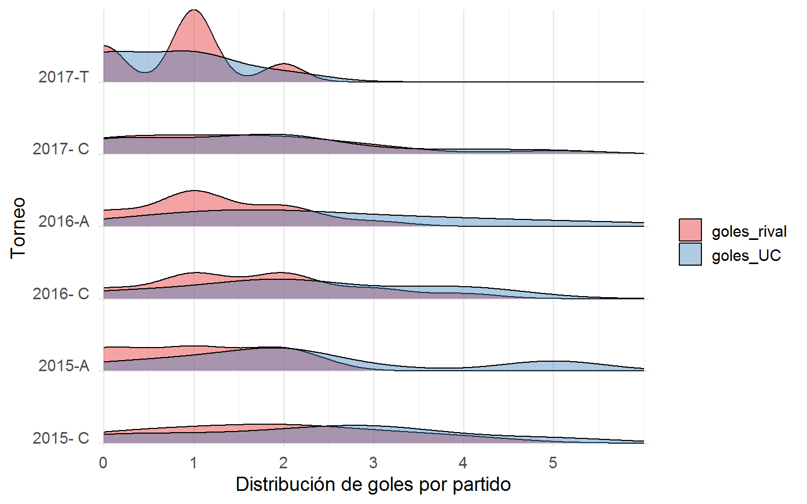

La mala racha de la actual Católica de Mario Salas es innegable. Con casi la mitad de este Transición 2017 jugado se tiene un escenario que está dentro de los 7 peores inicios de campaña en la historia del cuadro cruzado, igualando el pobre 33.3% de rendimiento alcanzado por el vilipendiado paso de Falcioni el año 2014. En ambos casos alcanzando solo 7 puntos de los 21 en disputa.
El comandante está en la cuerda floja ya no solo por sus detractores en la hinchada, sino que también corre la versión de negociar su salida por parte de la directiva si no tiene una buena presentación este domingo a las 12:00 horas contra Colo-Colo en San Carlos de Apoquindo por la 8va fecha (ver noticia).
El bajo rendimiento del actual torneo se suma este semestre a la eliminación de Copa Chile y la derrota en la Supercopa, además de la eliminación en fase de grupos de Libertadores (sin clasificar a Sudamericana como consuelo) y la no obtención del tricampeonato en el Clausura 2017, en el semestre anterior.
Las principales causas de la falta de resultados apuntan no solo al trabajo semanal de entrenamiento y a las cuestionadas decisiones técnicas y tácticas de Salas durante los partidos, sino que también a la planificación y conformación del plantel (responsabilizando también a la directiva), además de los bajos rendimientos individuales de varios jugadores.
Dentro de estos últimos argumentos destacan la mención a las partidas de elementos claves, como por ejemplo la partida del pájaro Gutiérrez a Palestino (goleador de la UC el torneo anterior con 4 tantos), dejando pocas opciones en delantera ante la lesión de Llanos y el bajo rendimiento de Silva. Otro ejemplo es el préstamo de Carreño a Everton, quien ha tenido un desempeño destacado siendo titular en el elenco de Vitamina Sánchez.
Por otro lado, los refuerzos en general “no han dado el ancho”. Al indesmentible fracaso de Silva como reemplazante de Castillo, se suma el bajo aporte de Vallejos (por Noir o Bravo) y Voboril (por Parot), además de Jeisson Vargas y Vidal quienes por lesiones prácticamente no han jugado. En este grupo solo son rescatables los aportes de Ampuero y Aued.
No podemos asegurar cuánto de cierto hay en esos argumentos o cuál es el peso de cada uno de ellos en los resultados. No obstante, en #DatoFútbol quisimos darle un vistazo a algunos datos disponibles en internet para repasar las campañas de Salas en la UC en el torneo nacional, aportando un contexto adicional en cuanto al rendimiento del DT y el comporatmiento de los goles a lo largo de los torneos.
Análisis y visualización de datos
A continuación la tabla general con partidos jugados, ganados, empatados y perdidos, con su respectiva cantidad de goles a favor y en contra, además del rendimiento y puesto obtenido en la tabla para cada torneo de Salas en la UC en orden cronológico:
| Torneo | PJ | PG | PE | PP | GF | GC | Dif_G | Puntos | Rendimiento | Lugar |
|---|---|---|---|---|---|---|---|---|---|---|
| 2015- C | 17 | 8 | 5 | 4 | 40 | 31 | 9 | 29 | 56.9 | 4 |
| 2015-A | 15 | 10 | 2 | 3 | 33 | 15 | 18 | 32 | 71.1 | 2 |
| 2016- C | 15 | 9 | 2 | 4 | 33 | 25 | 8 | 29 | 64.4 | 1 |
| 2016-A | 15 | 9 | 4 | 2 | 37 | 18 | 19 | 31 | 68.9 | 1 |
| 2017- C | 15 | 7 | 2 | 6 | 25 | 23 | 2 | 23 | 51.1 | 4 |
| 2017-T | 7 | 1 | 4 | 2 | 5 | 6 | -1 | 7 | 33.3 | 11 |
Mario Salas está cumpliendo su tercer año al mando de la UC, disputando con este su sexto torneo nacional. Considerando el bicampenato obtenido el 2016 y asumiendo que este año ya no logró campeonar, su tasa de campeonatos ganados versus jugados es de 0.33 (solo torneo nacional, sin Copa Chile ni competencias internacionales), lo que es alto en relación al mismo índice histórico de la UC (0.13) que revisamos en un post anterior para todos los campeones de primera división del fútbol chileno. Desde esta perspectiva, Mario Salas ha tenido un paso muy exitoso por La Franja.
Revisando la tabla, se puede apreciar que en los 5 torneos previos su peor lugar fue 4to, con rendimientos que variaron entre 51.1% y 71.1%. Se destaca que el torneo que obtuvo mayor rendimiento no logró ser campeón. También que el rendimiento más bajo fue justamente el torneo anterior (Clausura 2017), con lo que sumado al actual torneo, este 2017 representa el peor año de Salas en la UC.
Desde la arista de los partidos ganados, empatados y perdidos, y por lo tanto de los puntos obtenidos, se observa cierta regularidad entre los torneos previos (Clausura 2017 con el peor registro en todos los indicadores). Sin embargo, con lo que se lleva de este Transición 2017 llama la atención la cantidad de empates (4) y falta de victorias (1). ¿La razón principal? Sequía goleadora.
Cuando nos pregunten “¿Qué hacemos para ganar?”, no podemos olvidar la frase para el bronce: “para ganar en el fútbol hay que hacer más goles que el rival”. Y esto cabe como anillo al dedo a la situación de la UC actual:
En el Transcición 2017 la UC ha tenido un comportamiento muy diferente en cuanto a goles a favor: solo 5 goles en 7 partidos. Si se mantiene esta tendencia podrían alcanzarse únicamente 11 goles al final del torneo, lo que está muy por debajo de todos los torneos previos.
En la siguiente visualización se puede observar la distribución de goles a favor y goles del equipo rival paara los partidos de cada torneo de Salas en la UC:

Se puede observar que:
La cantidad de goles a favor por partido ha disminuido sostenidamente en el tiempo (torneos 2015-2016 con varios partidos con 2 a 5 goles a favor; en contraste la mayoría del 2017 con 2 o menos que 2 goles a favor).
Si bien la cantidad de goles en contra por partido también ha disminuido, los goles a favor lo han hecho en mayor medida, por lo tanto la distribución de goles por partido de los equipos rivales supera (“se come”) a la distribución de goles a favor en este Transición 2017.
¿Que siga o se vaya?
Por supuesto que la decisión la tomará la directiva cruzada, sin duda teniendo en cuenta el alto monto de la indemnización del comandante (cercano a los 600 millones de pesos chilenos), seguramente tratando de negociar su salida por un valor menor a fin de año gracias a una claúsula que lo permite.
En cuánto a si terminar el proceso de Salas es la decisión correcta o no dependerá de las expectativas con que se mire su desempeño en la UC, donde ya vimos que respecto a la misma historia del club a nivel local tiene un rendimiento muy exitoso (único bicampeonato y un buen índice de torneos ganados/jugados, incluso mejor que el que tiene el club).
En el caso de apostar alto, como por ejemplo un mejor rendimiento internacional sin dejar de lado el éxito local, podría tener sentido reemplazarlo, aunque se debe tener en cuenta quién lo reemplazaría, porque sin duda para que el cambio se justifique quien llegue deberá tener un igual o mejor rendimiento para estar a la altura del comandante, y eso también dependerá, como en todos lados en el fútbol, de los rendimientos individuales de los jugadores, lesiones, desempeño de los rivales, inversión de la directiva, etc.